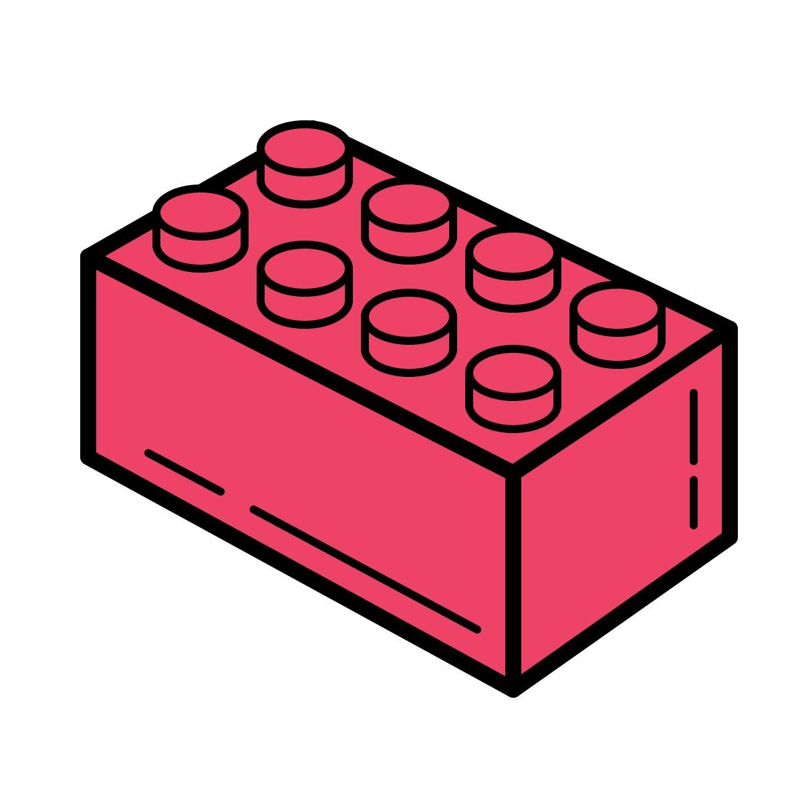

Playing Cards
These custom playing cards represent the core skills, design workflows, and creative hardware competencies inside the Gutierrez Design Inc. studio workspace.
Creative Tech Deck
A
HCI & UX Design
Designing intuitive interfaces, testing user pathways, and building wireframe prototypes focused on human-centered experiences.
A
K
3D Prototyping
Modeling custom physical fixtures in CAD and fabricating structural elements using high-precision FDM 3D printing.
K
Q
Web Development
Translating complex wireframes and high-fidelity mockups into fast, semantic, and highly accessible web platforms.
Q
J

LEGO Modeling
Configuring custom parts, researching injection molding techniques, and developing structural brick layouts using digital modeling programs.
J
10
System Upgrades
Assembling high-performance workstations, upgrading internal memory systems, and configuring optimal local network layouts.
10
9

Graphic Design
Refining high-end branding identities, structural typography rules, and custom vector layouts for digital and print media.
9